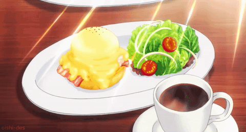

Shokugeki No Soma The Queen's Eggs Benedict

Description
The perfect day starts with this delightful Eggs Benedict from none other than The Queen herself
from Shokugeki No Soma
Ingredients
- 4 slices thick-cut bacon
- 4 eggs
- 1 liter water
- 100 ml vinegar
- 4 egg yolks
- 80 grams butter
- 2 tsp of worcestershire sauce
- 2 tsp of lemon juice
- 2 english muffins
- Parsley
- Karasumi
- Lettuce leaves
Steps
- Pour water and vinegar into a pot and bring them to a boil, and then reduce the heat.
Stir the liquid with a spoon to create a small tornado/whirl, and then crack one egg into it directly,
and let it poach. After 2 minutes, scoop the egg out carefully with a slotted spoon and
immediately place it in cold water. Repeat until all eggs have been poached
- For the hollandaise sauce, place the egg yolks into a double boiler, and while they are warming,
mix them with a hand mixer and remove them once they reach room temperature
- Melt the butter in a microwave and split them into 4 equal portions. Slowly add them to the mixture
and mix everything thoroughly. Add the worcestershire sauce, lemon juice, salt, pepper, and
mix well to finish off the sauce
- Cut the bacon slices into quarters and cook them in a frying pan until browned on both sides
- Slice the english muffins in half, toast them, and then spread with some butter and top them with the bacon slices
- Gently dry a poached egg and place on top of the bacon slices. Drizzle some hollandaise sauce on top and
top with some chopped parsley and grated karasumi. Place everything on a plate and decorate with a lettuce leaf on the side, and you’re done!